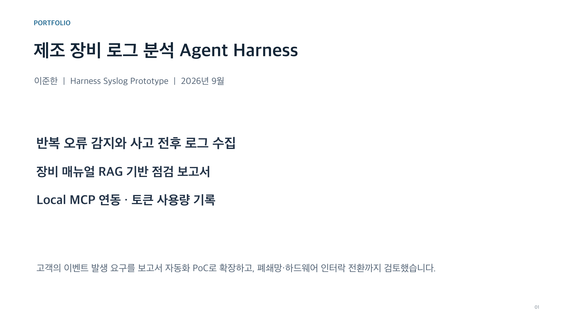

01
AI AGENT2026
Harness Syslog
SQL 장비 로그와 매뉴얼 RAG를 결합해 반복 오류의 전후 상황과 점검 근거를 자동으로 정리하는 Agent Harness입니다.
- SQLite 조건 검색과 Chroma 문서 검색을 역할별 MCP로 분리
- 로그 사실·매뉴얼 근거·분석 추정을 구분한 보고서 생성
- 합성 오류 3건 탐지, 사고 전후 로그 18건과 매뉴얼 페이지 연결
- Docker 재현 환경과 결과 검증 Hook 구성
PythonMCPRAGSQLiteChromaDocker
저장소에서 코드 보기 ↗

Prototype overviewOpen repo ↗